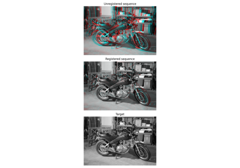
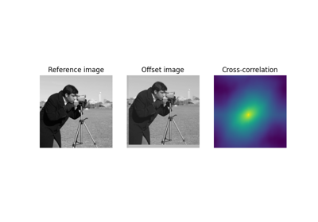
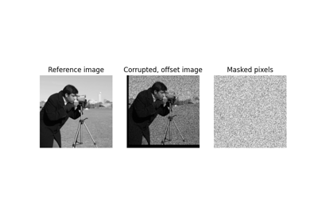
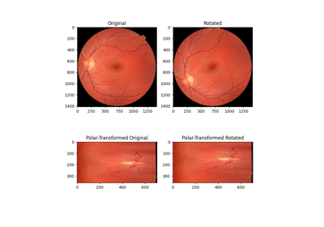

skimage.registration#
Coarse to fine optical flow estimator. |
|
Coarse to fine optical flow estimator. |
|
Efficient subpixel image translation registration by cross-correlation. |
- skimage.registration.optical_flow_ilk(reference_image, moving_image, *, radius=7, num_warp=10, gaussian=False, prefilter=False, dtype=<class 'numpy.float32'>)[source]#
Coarse to fine optical flow estimator.
The iterative Lucas-Kanade (iLK) solver is applied at each level of the image pyramid. iLK [1] is a fast and robust alternative to TVL1 algorithm although less accurate for rendering flat surfaces and object boundaries (see [2]).
- Parameters:
- reference_imagendarray, shape (M, N[, P[, …]])
The first grayscale image of the sequence.
- moving_imagendarray, shape (M, N[, P[, …]])
The second grayscale image of the sequence.
- radiusint, optional
Radius of the window considered around each pixel.
- num_warpint, optional
Number of times moving_image is warped.
- gaussianbool, optional
If True, a Gaussian kernel is used for the local integration. Otherwise, a uniform kernel is used.
- prefilterbool, optional
Whether to prefilter the estimated optical flow before each image warp. When True, a median filter with window size 3 along each axis is applied. This helps to remove potential outliers.
- dtypedtype, optional
Output data type: must be floating point. Single precision provides good results and saves memory usage and computation time compared to double precision.
- Returns:
- flowndarray, shape (reference_image.ndim, M, N[, P[, …]])
The estimated optical flow components for each axis.
Notes
The implemented algorithm is described in Table2 of [1].
Color images are not supported.
References
[1] (1,2)Le Besnerais, G., & Champagnat, F. (2005, September). Dense optical flow by iterative local window registration. In IEEE International Conference on Image Processing 2005 (Vol. 1, pp. I-137). IEEE. DOI:10.1109/ICIP.2005.1529706
[2]Plyer, A., Le Besnerais, G., & Champagnat, F. (2016). Massively parallel Lucas Kanade optical flow for real-time video processing applications. Journal of Real-Time Image Processing, 11(4), 713-730. DOI:10.1007/s11554-014-0423-0
Examples
>>> from skimage.color import rgb2gray >>> from skimage.data import stereo_motorcycle >>> from skimage.registration import optical_flow_ilk >>> reference_image, moving_image, disp = stereo_motorcycle() >>> # --- Convert the images to gray level: color is not supported. >>> reference_image = rgb2gray(reference_image) >>> moving_image = rgb2gray(moving_image) >>> flow = optical_flow_ilk(moving_image, reference_image)
Registration using optical flow
Registration using optical flow
- skimage.registration.optical_flow_tvl1(reference_image, moving_image, *, attachment=15, tightness=0.3, num_warp=5, num_iter=10, tol=0.0001, prefilter=False, dtype=<class 'numpy.float32'>)[source]#
Coarse to fine optical flow estimator.
The TV-L1 solver is applied at each level of the image pyramid. TV-L1 is a popular algorithm for optical flow estimation introduced by Zack et al. [1], improved in [2] and detailed in [3].
- Parameters:
- reference_imagendarray, shape (M, N[, P[, …]])
The first grayscale image of the sequence.
- moving_imagendarray, shape (M, N[, P[, …]])
The second grayscale image of the sequence.
- attachmentfloat, optional
Attachment parameter (\(\lambda\) in [1]). The smaller this parameter is, the smoother the returned result will be.
- tightnessfloat, optional
Tightness parameter (\(\theta\) in [1]). It should have a small value in order to maintain attachment and regularization parts in correspondence.
- num_warpint, optional
Number of times moving_image is warped.
- num_iterint, optional
Number of fixed point iteration.
- tolfloat, optional
Tolerance used as stopping criterion based on the L² distance between two consecutive values of (u, v).
- prefilterbool, optional
Whether to prefilter the estimated optical flow before each image warp. When True, a median filter with window size 3 along each axis is applied. This helps to remove potential outliers.
- dtypedtype, optional
Output data type: must be floating point. Single precision provides good results and saves memory usage and computation time compared to double precision.
- Returns:
- flowndarray, shape (image0.ndim, M, N[, P[, …]])
The estimated optical flow components for each axis.
Notes
Color images are not supported.
References
[1] (1,2,3)Zach, C., Pock, T., & Bischof, H. (2007, September). A duality based approach for realtime TV-L 1 optical flow. In Joint pattern recognition symposium (pp. 214-223). Springer, Berlin, Heidelberg. DOI:10.1007/978-3-540-74936-3_22
[2]Wedel, A., Pock, T., Zach, C., Bischof, H., & Cremers, D. (2009). An improved algorithm for TV-L 1 optical flow. In Statistical and geometrical approaches to visual motion analysis (pp. 23-45). Springer, Berlin, Heidelberg. DOI:10.1007/978-3-642-03061-1_2
[3]Pérez, J. S., Meinhardt-Llopis, E., & Facciolo, G. (2013). TV-L1 optical flow estimation. Image Processing On Line, 2013, 137-150. DOI:10.5201/ipol.2013.26
Examples
>>> from skimage.color import rgb2gray >>> from skimage.data import stereo_motorcycle >>> from skimage.registration import optical_flow_tvl1 >>> image0, image1, disp = stereo_motorcycle() >>> # --- Convert the images to gray level: color is not supported. >>> image0 = rgb2gray(image0) >>> image1 = rgb2gray(image1) >>> flow = optical_flow_tvl1(image1, image0)
Registration using optical flow
Registration using optical flow
- skimage.registration.phase_cross_correlation(reference_image, moving_image, *, upsample_factor=1, space='real', disambiguate=False, reference_mask=None, moving_mask=None, overlap_ratio=0.3, normalization='phase')[source]#
Efficient subpixel image translation registration by cross-correlation.
This code gives the same precision as the FFT upsampled cross-correlation in a fraction of the computation time and with reduced memory requirements. It obtains an initial estimate of the cross-correlation peak by an FFT and then refines the shift estimation by upsampling the DFT only in a small neighborhood of that estimate by means of a matrix-multiply DFT [1].
- Parameters:
- reference_imagearray
Reference image.
- moving_imagearray
Image to register. Must be same dimensionality as
reference_image.- upsample_factorint, optional
Upsampling factor. Images will be registered to within
1 / upsample_factorof a pixel. For exampleupsample_factor == 20means the images will be registered within 1/20th of a pixel. Default is 1 (no upsampling). Not used if any ofreference_maskormoving_maskis not None.- spacestring, one of “real” or “fourier”, optional
Defines how the algorithm interprets input data. “real” means data will be FFT’d to compute the correlation, while “fourier” data will bypass FFT of input data. Case insensitive. Not used if any of
reference_maskormoving_maskis not None.- disambiguatebool
The shift returned by this function is only accurate modulo the image shape, due to the periodic nature of the Fourier transform. If this parameter is set to
True, the real space cross-correlation is computed for each possible shift, and the shift with the highest cross-correlation within the overlapping area is returned.- reference_maskndarray
Boolean mask for
reference_image. The mask should evaluate toTrue(or 1) on valid pixels.reference_maskshould have the same shape asreference_image.- moving_maskndarray or None, optional
Boolean mask for
moving_image. The mask should evaluate toTrue(or 1) on valid pixels.moving_maskshould have the same shape asmoving_image. IfNone,reference_maskwill be used.- overlap_ratiofloat, optional
Minimum allowed overlap ratio between images. The correlation for translations corresponding with an overlap ratio lower than this threshold will be ignored. A lower overlap_ratio leads to smaller maximum translation, while a higher overlap_ratio leads to greater robustness against spurious matches due to small overlap between masked images. Used only if one of
reference_maskormoving_maskis not None.- normalization{“phase”, None}
The type of normalization to apply to the cross-correlation. This parameter is unused when masks (reference_mask and moving_mask) are supplied.
- Returns:
- shiftndarray
Shift vector (in pixels) required to register
moving_imagewithreference_image. Axis ordering is consistent with the axis order of the input array.- errorfloat
Translation invariant normalized RMS error between
reference_imageandmoving_image. For masked cross-correlation this error is not available and NaN is returned.- phasedifffloat
Global phase difference between the two images (should be zero if images are non-negative). For masked cross-correlation this phase difference is not available and NaN is returned.
Notes
The use of cross-correlation to estimate image translation has a long history dating back to at least [2]. The “phase correlation” method (selected by
normalization="phase") was first proposed in [3]. Publications [1] and [2] use an unnormalized cross-correlation (normalization=None). Which form of normalization is better is application-dependent. For example, the phase correlation method works well in registering images under different illumination, but is not very robust to noise. In a high noise scenario, the unnormalized method may be preferable.When masks are provided, a masked normalized cross-correlation algorithm is used [5], [6].
References
[1] (1,2)Manuel Guizar-Sicairos, Samuel T. Thurman, and James R. Fienup, “Efficient subpixel image registration algorithms,” Optics Letters 33, 156-158 (2008). DOI:10.1364/OL.33.000156
[2] (1,2)P. Anuta, Spatial registration of multispectral and multitemporal digital imagery using fast Fourier transform techniques, IEEE Trans. Geosci. Electron., vol. 8, no. 4, pp. 353–368, Oct. 1970. DOI:10.1109/TGE.1970.271435.
[3]C. D. Kuglin D. C. Hines. The phase correlation image alignment method, Proceeding of IEEE International Conference on Cybernetics and Society, pp. 163-165, New York, NY, USA, 1975, pp. 163–165.
[4]James R. Fienup, “Invariant error metrics for image reconstruction” Optics Letters 36, 8352-8357 (1997). DOI:10.1364/AO.36.008352
[5]Dirk Padfield. Masked Object Registration in the Fourier Domain. IEEE Transactions on Image Processing, vol. 21(5), pp. 2706-2718 (2012). DOI:10.1109/TIP.2011.2181402
[6]D. Padfield. “Masked FFT registration”. In Proc. Computer Vision and Pattern Recognition, pp. 2918-2925 (2010). DOI:10.1109/CVPR.2010.5540032
Image RegistrationMasked Normalized Cross-Correlation
Masked Normalized Cross-CorrelationUsing Polar and Log-Polar Transformations for Registration
Using Polar and Log-Polar Transformations for Registration